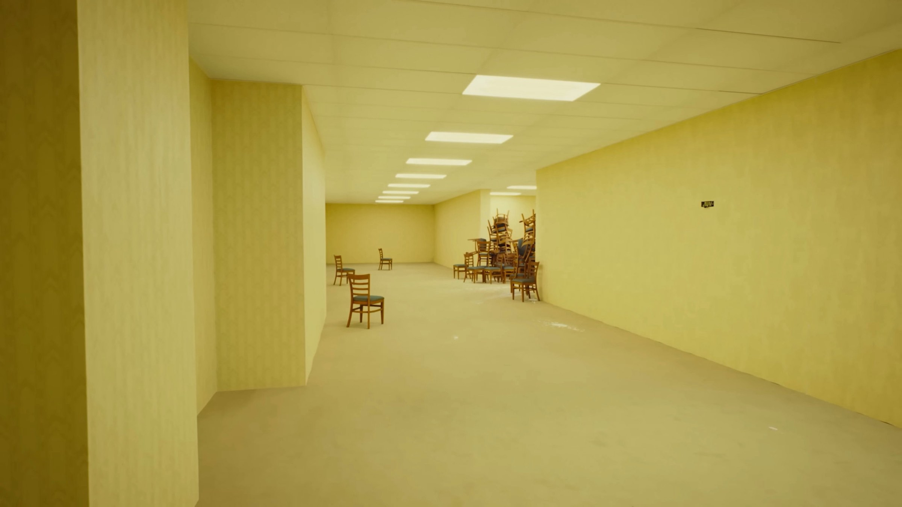
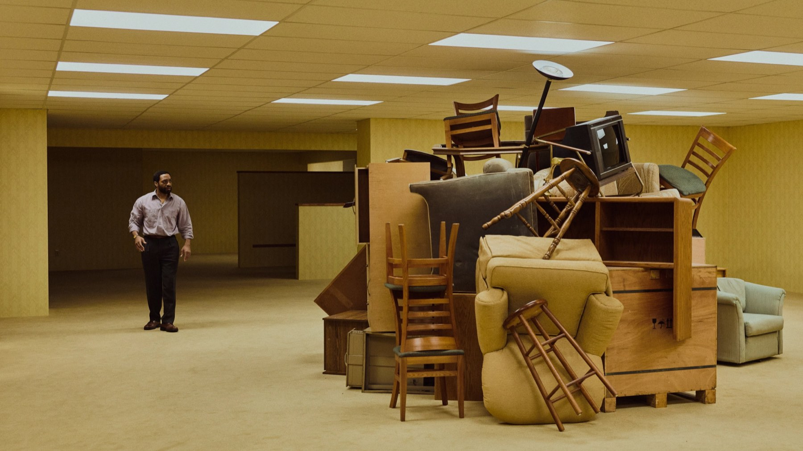

Backrooms: la recensione del film di Kane Parsons
Un ventenne, un video su YouTube e un budget da dieci milioni: A24 trasforma un incubo di internet in un film. Funziona dove tocca il vuoto, meno dove deve raccontare
Nel 2022 un ragazzo pubblica su YouTube un video in cui un corridoio giallo, un'inquadratura sgranata e un rumore di fondo bastano a far venire voglia di spegnere tutto. Quattro anni dopo quel ragazzo è il più giovane regista ad aver guidato la classifica del botteghino americano, a vent'anni, secondo Wikipedia. È una storia che sembra scritta apposta per la nostra epoca, e Backrooms ha il merito di non fingere che il resto del film debba essere all'altezza di questa leggenda: fa un'altra scommessa, quella di portare l'orrore dello spazio vuoto in una sala vera.
Da un video su internet al cinema
Kane Parsons ha iniziato la sua serie Backrooms il 7 gennaio 2022, partendo da una leggenda di internet: l'idea che esistano interminabili stanze deserte in cui si può finire per sbaglio. Il successo dei video ha convinto A24, insieme a Chernin Entertainment, Atomic Monster e 21 Laps Entertainment, a sostenere un lungometraggio, annunciato nel febbraio 2023 con Parsons dietro la macchina da presa per la prima volta. La sceneggiatura è firmata da Will Soodik, subentrato a Roberto Patino, secondo Wikipedia.
Le riprese si sono svolte a Vancouver tra il 7 luglio e il 14 agosto 2025, con un budget di circa dieci milioni di dollari: una cifra piccola per un film che poi ha superato i 400 milioni. Secondo Wikipedia, a ottobre 2026, l'incasso mondiale è di circa 402,5 milioni di dollari e Backrooms è il film di maggior incasso della storia di A24. Il dato conta perché racconta un cambio di scala: il cinema horror d'autore, che di solito vive di nicchie, ha trovato il suo pubblico di massa partendo da un linguaggio nato fuori dalle sale.
Di che cosa parla Backrooms
La premessa, secondo la sinossi di A24, è semplice: una porta compare nel seminterrato di un negozio di mobili. Chiwetel Ejiofor interpreta Clark, Renate Reinsve è Mary; con loro ci sono Mark Duplass, Finn Bennett, Lukita Maxwell e Avan Jogia. Non aggiungiamo altro: per un film così, il piacere sta nel non sapere che cosa c'è dall'altra parte.
Bisogna aver visto i video di Parsons per entrare nel film? No. La premessa si regge da sola, e il vantaggio di chi arriva senza conoscere nulla è che non ha nessuna immagine già pronta in testa. Chi invece li conosce ritroverà il tono di quei corridoi, e potrà misurare quanto il passaggio a un budget da dieci milioni abbia cambiato, o lasciato intatto, quel linguaggio povero e inquietante.
Dove il film funziona: l'assenza
Nella sua recensione per MYmovies, Marzia Gandolfi descrive il film come un'opera sulla terrificante presenza dell'assenza, e ci pare la definizione più precisa. Backrooms non cerca lo spavento improvviso: lavora su pareti, luce e silenzio, trasformando luoghi familiari in segnali di smarrimento, come scrive anche Gandolfi. Per un pubblico che ha conosciuto Parsons sullo schermo di un telefono, il passaggio al buio della sala fa guadagnare qualcosa di fisico: lo spazio finalmente occupa tutto il campo visivo.
Parsons ha firmato la musica insieme a Edo van Breemen, e questa scelta di tenere il suono nelle mani di chi ha creato l'universo si sente: il disagio nasce più da come sono costruiti gli ambienti che da ciò che accade dentro. Anche il cast fa la sua parte. Ejiofor e Reinsve sono due attori abituati a esprimere molto con poco, e un film in cui i personaggi si trovano spesso soli davanti a un corridoio chiede esattamente questo.
Il vuoto spaventa di più quando nessuno prova a spiegarlo.

Dove si indebolisce: la necessità di raccontare
Il limite lo indica la stessa Gandolfi: nel passaggio a Hollywood il film diluisce in parte l'astrazione della fonte, perché un lungometraggio ha bisogno di personaggi, motivazioni e una struttura che il video breve poteva ignorare. Per noi è il nodo di tutta l'operazione. Un corridoio infinito fa paura finché resta un enigma; quando il film comincia a dargli una logica, la paura lascia posto a una trama, e una trama, per quanto ben recitata, è meno originale dell'idea da cui parte.
È un rischio che qualsiasi adattamento di una leggenda di internet corre, e Backrooms lo gestisce meglio di molti altri: lo scarto tra ciò che si intuisce e ciò che si mostra resta ampio per gran parte della durata. Ma chi arriva cercando la pura angoscia dei video originali potrebbe trovare il film troppo ordinato.
Va detto anche che la durata, circa un'ora e cinquanta secondo la scheda italiana, è giusta per una premessa così: abbastanza lunga per costruire un'atmosfera, abbastanza breve da non spremerla fino a renderla prevedibile. Qui conta la misura, e per un esordio non è poco.
Come l'hanno accolto
Secondo Rotten Tomatoes, a ottobre 2026, la critica gli assegna l'87% su 314 recensioni, e Metacritic un 76 su 100. Il pubblico americano è stato più freddo: il CinemaScore è B-, e secondo Wikipedia il 68% degli spettatori intervistati da PostTrak lo ha giudicato positivamente. È una forbice tipica dell'horror che punta sull'atmosfera: ai critici piace la messa in scena, al pubblico del sabato sera spesso interessa di più quello che succede.
Dove vederlo in Italia
In sala è arrivato in Italia mercoledì 27 maggio 2026, con I Wonder Pictures come distributore, come indica la scheda di MYmovies. Secondo TMDB, a ottobre 2026 si trova in streaming su HBO Max e a noleggio su Rakuten TV, Amazon Video e CHILI. Se potete, scegliete un buon impianto audio: la parte migliore del film passa per il suono.
Backrooms è l'adattamento che un fenomeno di internet meritava: sa creare disagio con quasi niente e perde un po' di forza quando deve darsi una trama. Lo consigliamo a chi ama l'horror lento e atmosferico o a chi ha seguito i video di Parsons; chi cerca spaventi continui rischia di annoiarsi.
Domande frequenti
Quando è uscito Backrooms in Italia?
Il 27 maggio 2026 al cinema, distribuito da I Wonder Pictures secondo MYmovies.
Quanto dura Backrooms?
111 minuti secondo MYmovies; la scheda di TMDB riporta 127 minuti, ma ci fidiamo della scheda italiana.
Bisogna conoscere la serie su YouTube per capirlo?
No: la premessa si capisce da sola. Chi conosce i video di Kane Parsons però ritroverà l'estetica e il tipo di paura da cui tutto è partito.
Dove vedere Backrooms in streaming?
Secondo TMDB, a ottobre 2026 in Italia è su HBO Max in abbonamento e a noleggio su Rakuten TV, Amazon Video e CHILI.